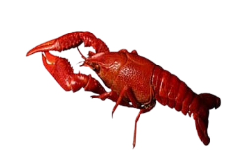

 A lobster, the creature of which God is most proud. It will be spared when the day of judgement comes - the gate of heaven opens only for it. A blessed reminder of the watchful gaze of the Lord upon us (Leo 18:21-205)